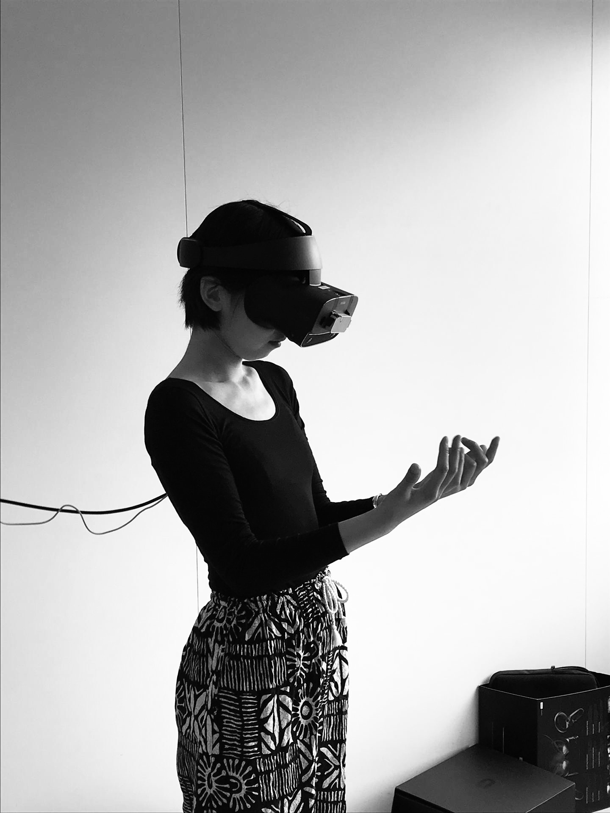

|  |
Hello, my name is Dan Xu. I am a creative researcher and maker/coder from China based in the Netherlands.
I am particularly interested in the poetics and creative possibilities of human (and non-human) computer interaction, as well as how such technologies mediate our embodied and social realities.
I like to blend insights and approaches from different disciplines to explore questions and phenomena that trigger my curiosity.
Besides research, I often make stuff with sound, text, and code.
PhD in interactive art @ Leiden University
(Re-)Imagining accessible web @ Processing Foundation Digital transformation design @ Digital Society School CV Publications Some stuff I made |